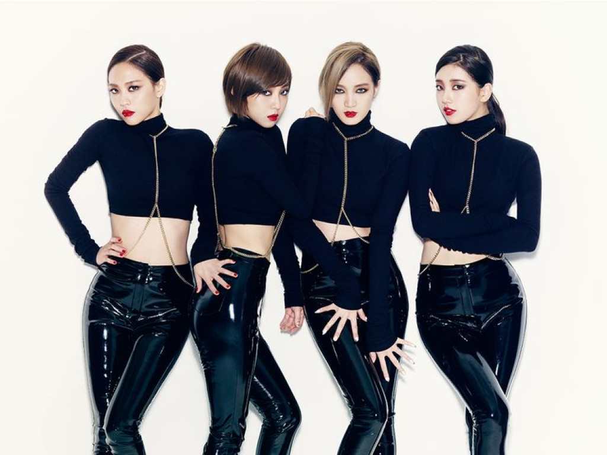
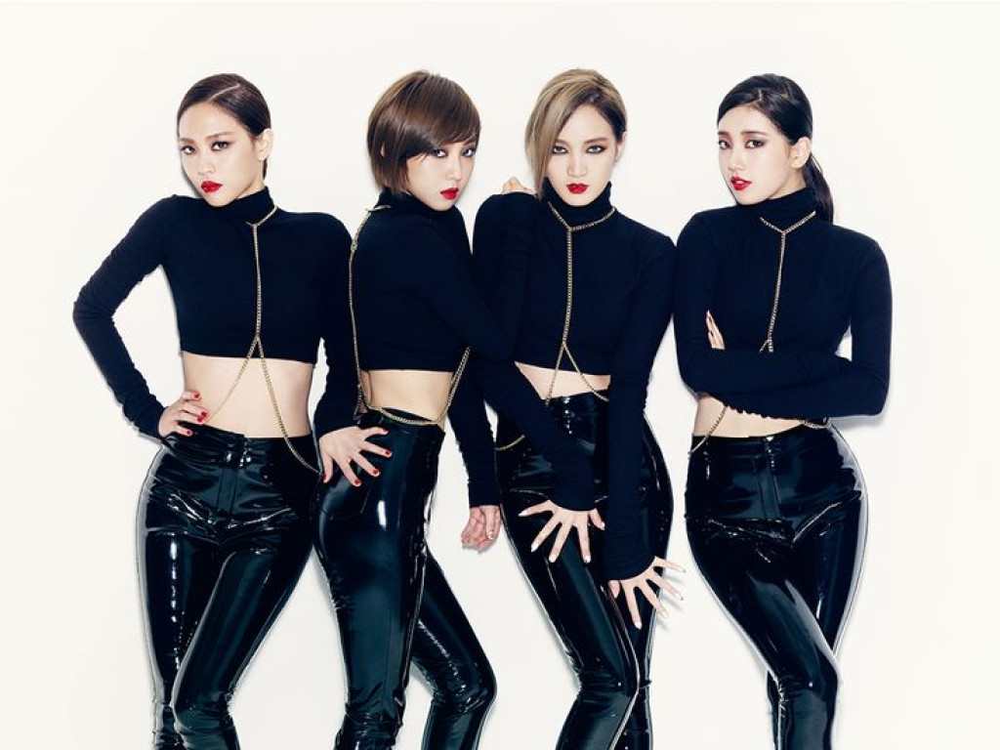

Miss A announced their comeback in Korea with an EP called Touch, released on February 20, 2012. On February 19, 2012, the music video was uploaded to YouTube through Miss A's official channel and gained over one million views in one day. Touch, both the song and the album, peaked at #2 on Gaon Chart Digital Singles and Physical Albums rankings for the 4th week of February. On October 8, 2012, Miss A announced their comeback with their fifth project album entitled Independent Women Part III. The five-track mini-album was released on October 15. On October 16, Miss A were involved in a minor car accident. They were taken to a hospital, and continued their schedules with only a few hours delay. They began their promotions for its lead single, "I Don't Need a Man", on October 18. "I Don't Need a Man" was also included on Miss A's next album, Hush.
On October 29, 2013, Miss A released their second studio album, Hush. Miss A released their extended play Colors on March 30, 2015. This was accompanied by an online reality series, Real Miss A. The music video for the lead single, "Only You", gained more than 2 million views on YouTube within 24 hours. Following the end of Colors promotions, Miss A became inactive indefinitely. In May 2016, Jia left the group; according to management, the other members were focusing on solo activities at the time. In November 2017, it was reported that Min had also departed from the group as her contract with JYP Entertainment had come to an end. On December 27, 2017, JYP confirmed that the group had disbanded.
 
